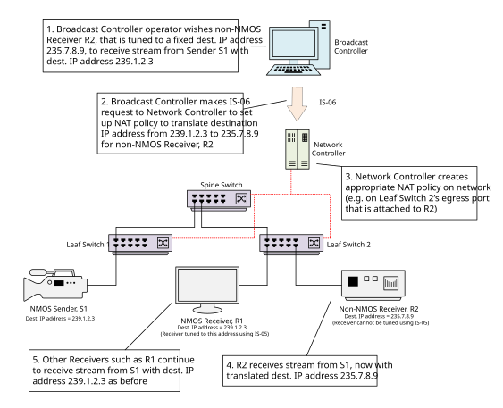
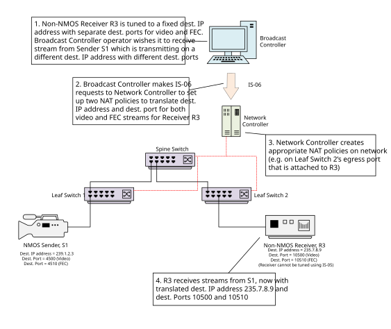
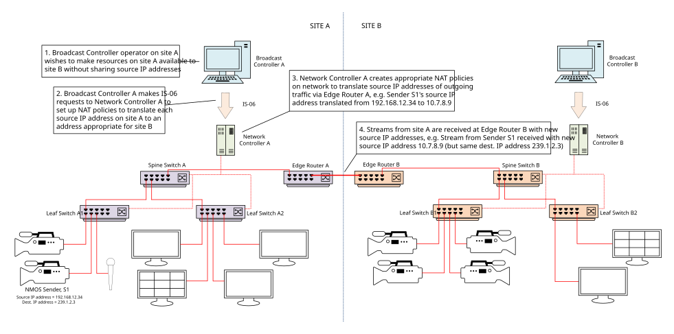
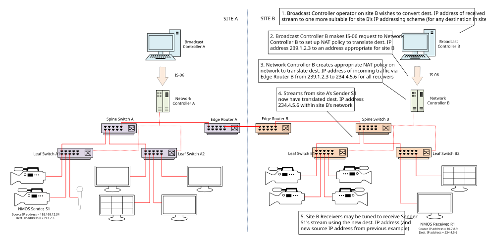

Data Model: Network Address Translation
(c) AMWA 2020, CC Attribution-ShareAlike 4.0 International (CC BY-SA 4.0)
A Network Address Translation policy represents a simple NAT policy for IP addresses and/or ports, to be applied by the network controller to the appropriate Network Devices.
The parameters of a Network Address Translation policy are:
id: uniquely identifies a network address translation policylabel: an optional human-readable name for the policymatch: one or more of thesource_ip,source_port,destination_ip,destination_portvalues that must be matched for the policy to be applied. If a port is specified, the corresponding IP address must also be specified.translated: one or more of thesource_ip,source_port,destination_ip,destination_portvalues that will be applied if thematchconditions are metreceiver_endpoint_ids: the receiver endpoints for which the policy should be applied (or any receiver if the array is empty)
The operations that are permitted on a Network Address Translation policy are GET, PUT, PATCH, and DELETE.
When a network controller does not support the network address translation functionality, the response to all operations must be 501 Not Implemented.
NAT Examples
The following diagrams demonstrate some use cases for simple NAT policies.
Supporting non-NMOS devices with fixed multicast addresses
One of the motivating use cases for IS-06 NAT policies is to flexibly support devices which are set to fixed multicast addresses. Examples of such devices include contribution encoders and decoders, network monitoring / packet capture equipment or any other device tuned to a specific multicast address which cannot be changed using the NMOS Connection API.
The figure below shows a non-NMOS Receiver, R2, that is tuned to a fixed destination IP address. The broadcast controller operator wishes R2 to receive the stream from Sender S1 which has a different destination IP address. The figure shows how a NAT-aware IS-06 network controller may be used to achieve this.

The broadcast controller allocates a unique policyId for the NAT policy, and makes a PUT request to the /network-address-translations/{policyId} resource, with a JSON request body describing the destination IP address to be matched, the translated address, and the receiver endpoint ID of the non-NMOS Receiver, which must be already registered as an Endpoint.
{
"id": "6b397632-d8af-4116-ad34-39ae9cc2806e",
"label": "NAT S1-R2",
"match": {
"destination_ip": "239.1.2.3"
},
"translated": {
"destination_ip": "235.7.8.9"
},
"receiver_endpoint_ids": [
"8268e254-e054-409b-b4ab-65ee18ae684d"
]
}
Note that for network monitoring / packet capture equipment, additional IS-06 NAT policies could be set up to support redirecting all network flows to the equipment (one for each flow on the network).
Supporting non-NMOS devices with fixed multicast addresses and UDP ports
Another use case for IS-06 NAT policies is to support devices that are tuned to a specific multicast address and UDP port which cannot be changed using the NMOS Connection API. In some of these cases, the same multicast address but different UDP ports might be used for different streams, for example for video and FEC as described in SMPTE ST 2022-5.
Consider that the broadcast controller operator now wishes a non-NMOS Receiver that is tuned to a specific IP address and UDP ports to receive two such streams. The figure shows how the broadcast controller may use a NAT-aware IS-06 network controller to achieve this.

The broadcast controller makes a first PUT request to create a NAT policy resource for the video stream, with a JSON request body describing the destination IP address and first port to be matched, the translated address details, and the receiver endpoint ID of the non-NMOS Receiver.
{
"id": "b46fa060-a5fe-4144-94dc-24d5041c9f10",
"label": "NAT S1-R3-video",
"match": {
"destination_ip": "239.1.2.3",
"destination_port": 4500
},
"translated": {
"destination_ip": "235.7.8.9",
"destination_port": 10500
},
"receiver_endpoint_ids": [
"b4aa4549-ef19-460b-9c93-76b41457af48"
]
}
The broadcast controller then makes a second PUT request to create another NAT policy resource for the FEC data, with a JSON request body describing the same destination IP address but the second port to be matched, along with the translated address details and the receiver endpoint ID of the non-NMOS Receiver.
{
"id": "4e8ff5ab-4c74-464c-8073-3d5a7f886041",
"label": "NAT S1-R3-fec",
"match": {
"destination_ip": "239.1.2.3",
"destination_port": 4510
},
"translated": {
"destination_ip": "235.7.8.9",
"destination_port": 10510
},
"receiver_endpoint_ids": [
"b4aa4549-ef19-460b-9c93-76b41457af48"
]
}
Supporting sharing of resources between networks
A third use case for IS-06 NAT policies is to support sharing of resources between networks. These might be on different sites and managed by different controllers. In such cases, the operator of the first network may wish to share resources without revealing private networking information to the second network such as source IP addresses. Additionally, the second network may have a different multicast addressing scheme to the first network, and so need to change the destination IP addresses of any incoming streams.
The two figures below show how the use of NAT-aware network controllers may be used to achieve these requirements.
In the first figure, the broadcast controller operator of site A wishes to make a resource available to site B but not reveal any private source IP addressing information. A NAT-aware IS-06 network controller on site A is used to achieve this.

The broadcast controller makes as many PUT requests as necessary to create a NAT policy for each source IP address to be translated, using the receiver endpoint ID of the edge router.
{
"id": "19abd553-af19-4a20-b299-146c5634b813",
"label": "NAT S1-outgoing",
"match": {
"source_ip": "192.168.12.34"
},
"translated": {
"source_ip": "10.7.8.9"
},
"receiver_endpoint_ids": [
"8cb36d14-a8bf-4608-ae50-5f3acd68b8b0"
]
}
In the second figure, the broadcast controller operator of site B wishes to modify the destination IP addresses of streams received from site A to make them more suitable for site B's multicast IP addressing scheme. To achieve this, a NAT-aware IS-06 network controller on site B is used.

The broadcast controller makes as many PUT requests as necessary to create a NAT policy for each destination IP address to be translated. In this case, no receiver endpoint ID is specified so that the policy is applied to the incoming stream for all end devices (i.e. it is applied at the ingress port of Spine Switch B that is attached to Edge Router B).
{
"id": "7e565b85-5efd-40c5-9929-05c13c19d14b",
"label": "NAT S1-incoming",
"match": {
"destination_ip": "239.1.2.3"
},
"translated": {
"destination_ip": "234.4.5.6"
},
"receiver_endpoint_ids": [
]
}